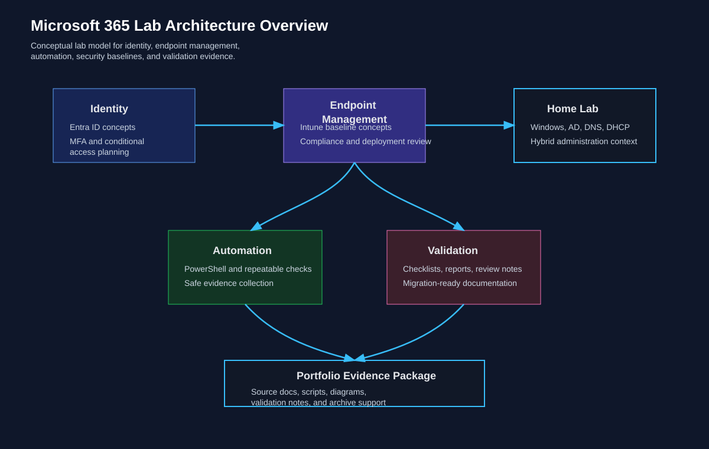

Microsoft 365 Lab Architecture Overview
Topology and policy-scoping diagram used throughout the Microsoft 365 Lab Baseline project; anchors related configs and validation checklists.
Preserved Proof Library
A curated review surface for diagrams, scripts, runbooks, validation records, RCA notes, recovery workflows, and sanitized technical documentation. Every card links to an existing repository file.
Readable recordsRunbooks, RCA reports, checklists, and notes.
Configuration evidenceYAML, JSON, CSV, and scripts for technical inspection.
Architecture contextTopology and workflow diagrams for fast orientation.
Evidence Metrics
Featured Evidence
Quick-preview of representative architecture diagrams, configs, and runbooks with relationship maps for reviewer context.

Topology and policy-scoping diagram used throughout the Microsoft 365 Lab Baseline project; anchors related configs and validation checklists.
Segmentation, VLAN mapping, and firewall zone relationships with links to VLAN walkthroughs and runbooks.
Quick-access to provisioning script, change log, and handoff notes used for repeatable administrative runs.
Topology and Workflow
Visual files that explain identity flow, network boundaries, segmentation, and support troubleshooting paths.
Maps Microsoft 365 identity, endpoint, and administration boundaries so reviewers can inspect how policy scope and service placement were documented.
Review EvidenceDocuments VLAN, firewall-zone, NAT, DMZ, and management-boundary logic for pfSense-oriented network segmentation review.
Review EvidencePreserves identity migration planning logic, coexistence boundaries, access transition points, and rollback awareness.
Review EvidenceShows the service desk path for isolating endpoint, DNS, DHCP, gateway, VPN, and firewall symptoms before escalation.
Review EvidenceValidation and Operations
Configuration samples, validation checklists, monitoring notes, and recovery workflows written for realistic review.
Records tenant-safe Conditional Access policy intent, target scope, control logic, exception handling, and validation considerations.
Review EvidenceDefines gateway, VLAN, DNS, DHCP, firewall, VPN, and service checks with evidence collection and rollback expectations.
Review EvidenceProvides structured planned-validation rows for recording source segment, destination, command, result, evidence reference, and reviewer notes.
Review EvidenceDefines non-destructive restore testing, integrity checks, rollback checkpoints, evidence capture, and recovery documentation requirements.
Review EvidencePowerShell and Change Control
Script and handoff records showing repeatable administrative work with change context.
Preserves PowerShell provisioning logic for parameter review, idempotent checks, dry-run validation, logging, and controlled account changes.
Review EvidenceRecords automation change scope, review rationale, validation method, rollback notes, and evidence required before broader reuse.
Review EvidenceDefines run prerequisites, review steps, log capture, rollback expectations, and operator handoff notes for provisioning automation.
Review EvidenceDocuments OU and identity-access change planning, rollback preparation, GPO review, and validation criteria without claiming unsupported scale.
Review EvidenceService Desk Evidence
Sanitized incident records focused on symptoms, investigation steps, resolution context, and lessons learned.
Sanitized incident summary covering impact, affected workflow, queue review, transport rule triage, corrective action, and validation evidence.
Review EvidenceSanitized timeline showing intake, queue-state checks, transport rule review, controlled retesting, and recovery confirmation.
Review EvidenceFormal RCA record with scope, user impact, repeatability checks, root cause, remediation sequence, validation, and prevention controls.
Review EvidenceCorrective action plan covering rule-order review, rollback checkpoints, queue-health checks, test delivery, and post-change validation.
Review EvidenceNetwork Operations
Runbooks and walkthroughs for VLANs, firewall segmentation, DNS, DHCP, and operational review.
Architecture documentation for segmentation goals, firewall policy intent, management isolation, troubleshooting paths, and validation evidence still required.
Review EvidenceDocuments VLAN purpose, trunk/access behavior, pfSense routing boundaries, Proxmox bridge review, and troubleshooting sequence.
Review EvidenceRunbook for DNS/DHCP health checks, lease review, reservation validation, service restart sequencing, backup, recovery, and escalation notes.
Review EvidenceRecruiter-facing expansion that connects segmentation evidence to objective, environment, architecture, implementation approach, validation process, and lessons learned.
Open Case StudyLibrary Controls
Indexes, source maps, resume evidence, and supporting reference files that help reviewers navigate the evidence set.
Static JSON index used to support proof-library retrieval and review.
Review EvidenceCSV map connecting source context to preserved evidence files.
Review EvidenceCondensed professional summary preserved as a repository PDF.
Review EvidenceRepository guidance and overview for the evidence library.
Review EvidencePublic-facing automation change note surfaced from the proof hub to improve crawl discovery without duplicating project content.
Review Evidence{kind=link}
{kind=link}
{kind=link}
{kind=link}